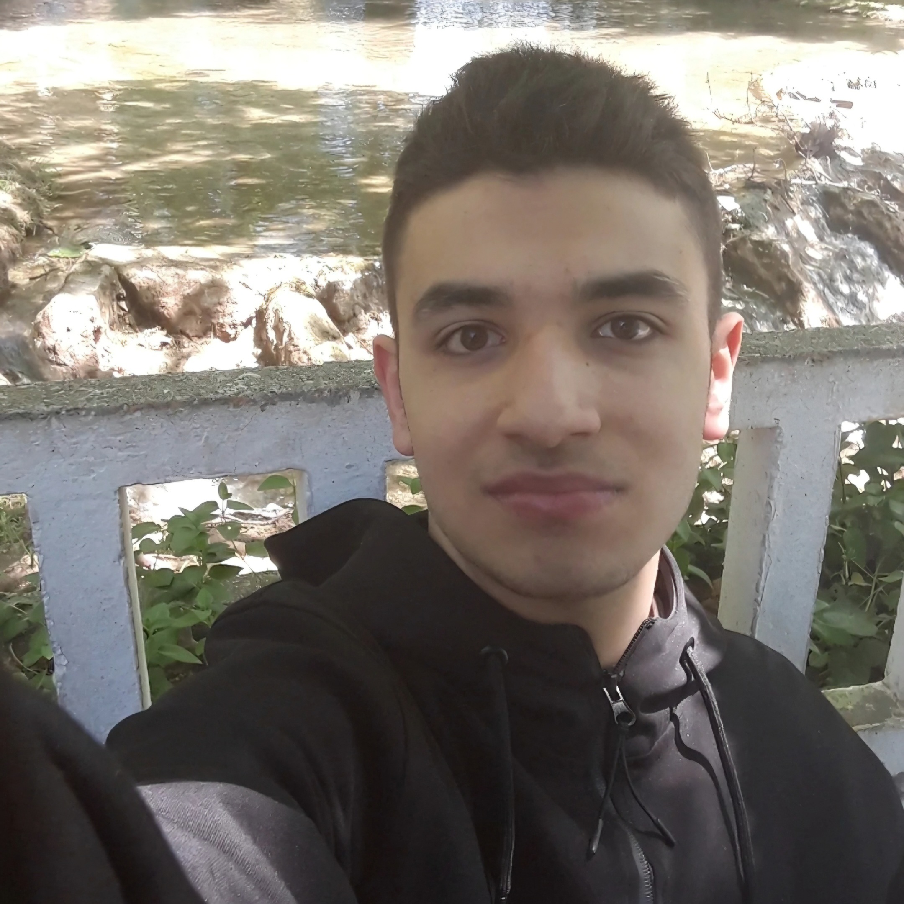

Açık kaynak, Linux ve mahremiyet gibi konularda içerikler üreterek dijital teknolojiyi bilinçli kullanmanız için çabalayan biriyim. Her şeyle bir nebze ilgili, bir o kadar da ilgisizim. İşte bu kadar, kendim hakkında söyleyecek başka bir şeyim yok. O kadar da ilginç biri değilim.